# Verificar, instalar y activar el paquete "tidyverse"if (!require(tidyverse)) {install.packages("tidyverse")}library(tidyverse)# Verificar, instalar y activar el paquete "kableExtra"if (!require(kableExtra)) {install.packages("kableExtra")}library(kableExtra)# Verificar, instalar y activar el paquete "ggplot2"if (!require(ggplot2)) {install.packages("ggplot2")}library(ggplot2)
2 modelos probabilísticos
Los modelos probabilísticos son herramientas matemáticas que se usan para predecir o analizar situaciones donde existe incertidumbre o azar. En vez de decir “esto pasará seguro”, calculan la probabilidad de que ocurra algo.
Los modelos probabilísticos se clasifican principalmente según la naturaleza de la variable aleatoria y la forma en que representan la incertidumbre. Como estadístico, conviene organizarlos en varios criterios complementarios:
segun el tipo de variable aleatoria
1. Modelos probabilísticos discretos
La variable toma valores contables (enteros).
Ejemplos:
Distribución binomial
Distribución de Poisson
Distribución hipergeométrica
Aplicación:
Número de ciudadanos atendidos, cantidad de errores en trámites, etc.
2. Modelos probabilísticos continuos
La variable toma valores en intervalos reales (infinitos).
Ejemplos:
Distribución normal
Distribución exponencial
Distribución uniforme Distrit
Aplicación:
Tiempo de atención, duración de procesos administrativos, etc.
modelos probabilisticos discretos
#Distribucion Binomial
La Distribución Binomial es una distribución de probabilidad que se utiliza para calcular la probabilidad de obtener un número determinado de éxitos en varios intentos.
Características principales
1. Es una distribución discreta
Solo toma valores enteros.
Ejemplo:
0 éxitos
1 éxito
2 éxitos
2. Tiene un número fijo de ensayos
La cantidad de experimentos o intentos está definida desde el inicio.
Ejemplo:
Lanzar una moneda 10 veces.
3. Cada ensayo tiene solo dos resultados posibles
Los resultados suelen llamarse:
Éxito
Fracaso
Ejemplo:
Cara o sello
Sí o no
Aprobar o reprobar
4. La probabilidad de éxito es constante
La probabilidad no cambia en cada ensayo.
Ejemplo:
Si la probabilidad de cara es 0.5, siempre será la misma en cada lanzamiento.
5. Los ensayos son independientes
Lo que ocurra en un intento no afecta a los demás.
Ejemplo:
El resultado de una moneda no cambia el siguiente lanzamiento.
Fórmula de la distribución binomial
P(X=x)=\binom{n}{x}p^x(1-p)^{n-x}
Donde:
*(n): número de ensayos
*(x): número de éxitos
*(p): probabilidad de éxito
\binom{n}{x}: combinaciones
Medidas importantes
Media (valor esperado):\mu = np
varianza:\sigma^2 = np(1-p)
Desviación estándar:\sigma = \sqrt{np(1-p)}
2.1 .Ejemplo
De acuerdo con un estudio publicado por un grupo de sociólogos de la Universidad de Massachusetts, aproximadamente 60% de los consumidores de Valium en el estado de Massachusetts empezaron a consumirlo a causa de problemas psicológicos. Calcule la probabilidad de que entre los siguientes 8 consumidores entrevistados de este estado:
A. Exactamente 3 comenzaron a consumir Valium por problemas psicológicos.
B. Al menos 5 comenzaron a consumir Valium por problemas psicológicos.
La probabilidad de que al menos 5 consumidores de Valium empezaron a consumir por problemas psicológicos es del 59.41%
Ver código
ggplot(df_3, aes(x = x, y = y, fill=factor(ifelse(x>4,"Valor","Resto")))) +geom_bar(stat ="identity",width =0.25) +xlab("x") +ylab("Cuantía") +ggtitle("Distribución Binomial") +scale_fill_manual(name ="", values=c("#b349f5","#02b8fa")) +theme_bw()
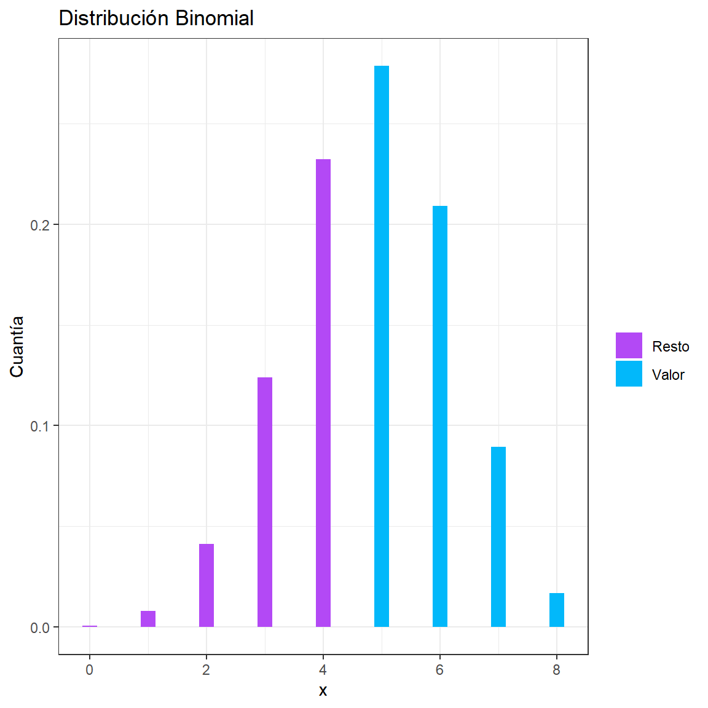
2.4 .Ejercicio 1
Se sabe que el 60% de los alumnos de una universidad asisten a clases el viernes. En una encuesta a 8 alumnos de la universidad. a) por lo menos siete asistan a clase el viernes? b) por lo menos dos no asistan a clase.
Eso significa que la probabilidad de que más de 2 alumnos asistan a clase es 0.9501 o 95.01%.
Ver código
ggplot(df_3, aes(x = x, y = y, fill=factor(ifelse(x>2,"Valor","Resto")))) +geom_bar(stat ="identity",width =0.25) +xlab("x") +ylab("Cuantía") +ggtitle("Distribución Binomial") +scale_fill_manual(name ="", values=c("#b349f5","#02b8fa")) +theme_bw()
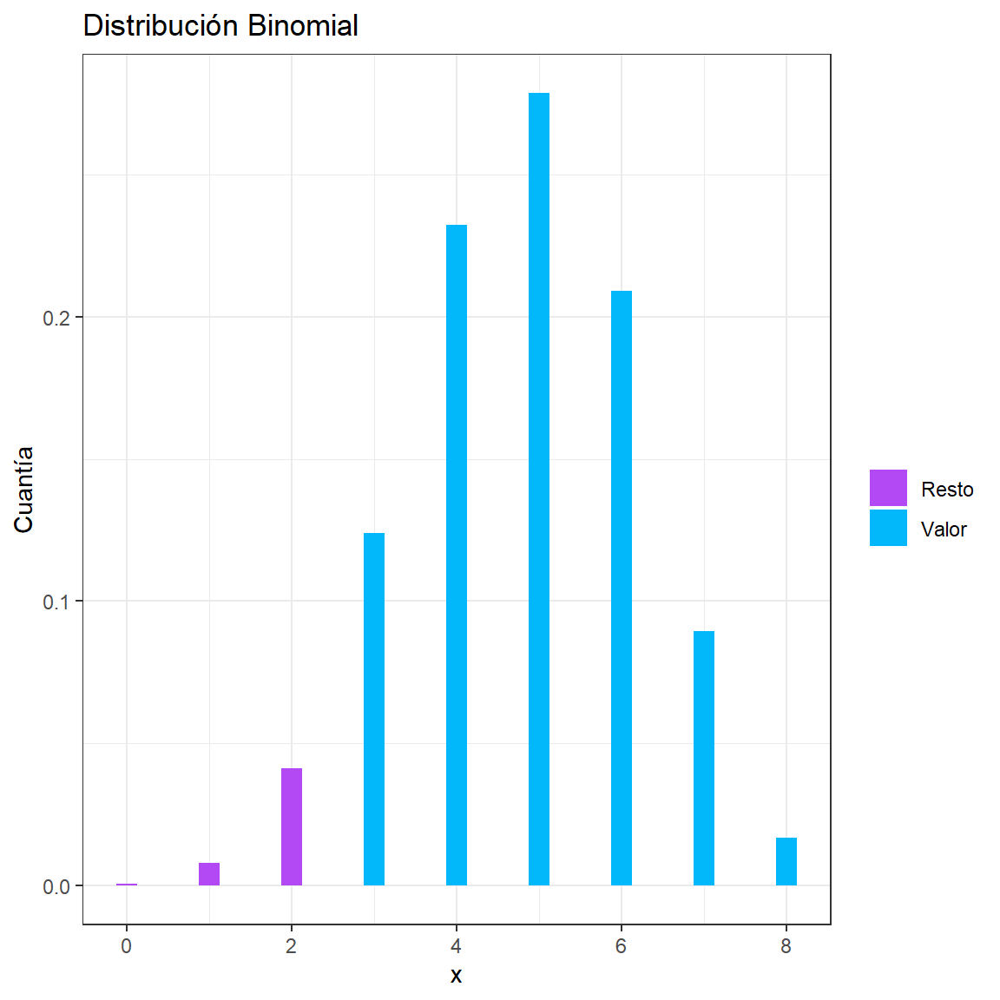
2.7 .Ejercicio 2
Según los registros universitarios fracasa el 5% de los alumnos de cierto curso. ¿cuál es la probabilidad de que, de 6 estudiantes seleccionados al azar, menos de 3 hayan fracasado?
ggplot(df_3, aes(x = x, y = y, fill=factor(ifelse(x>3,"Valor","Resto")))) +geom_bar(stat ="identity",width =0.25) +xlab("x") +ylab("Cuantía") +ggtitle("Distribución Binomial") +scale_fill_manual(name ="", values=c("#b349f5","#02b8fa")) +theme_bw()
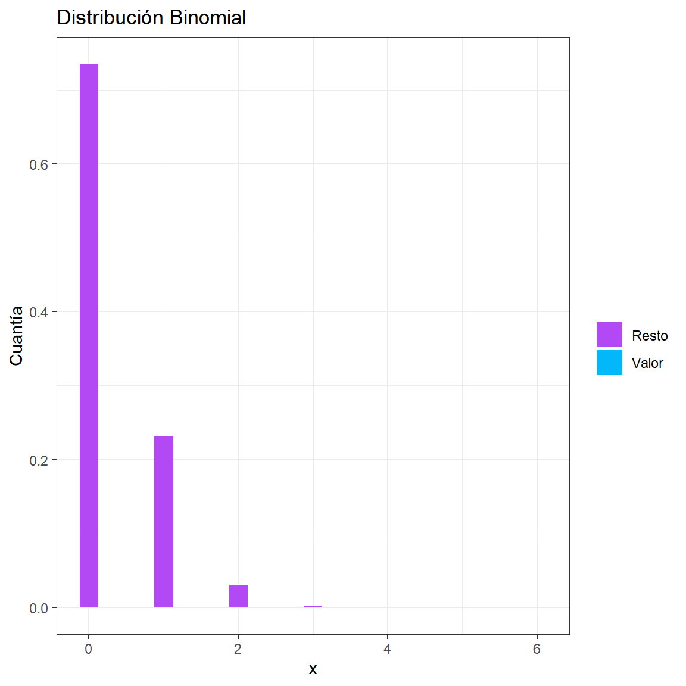
2.10 .Ejercicio 3
En promedio, el 10% de las varillas de madera usadas en cierto producto presentan problemas para ser usadas. ¿cuál es la probabilidad de que en un paquete de 15 varillas, a) encuentre exactamente 5 con defectos. b) por lo menos 10 estén nudosas, c) no más de 4 estén nudosas.
ggplot(df_3, aes(x = x, y = y, fill =factor(ifelse(x >=4, "Valor", "Resto")))) +geom_bar(stat ="identity", width =0.25) +xlab("Número de camiones con ponchamientos") +ylab("Probabilidad") +ggtitle("Distribución Binomial") +scale_fill_manual(name ="", values =c("Valor"="#b349f5", "Resto"="#02b8fa")) +theme_bw()
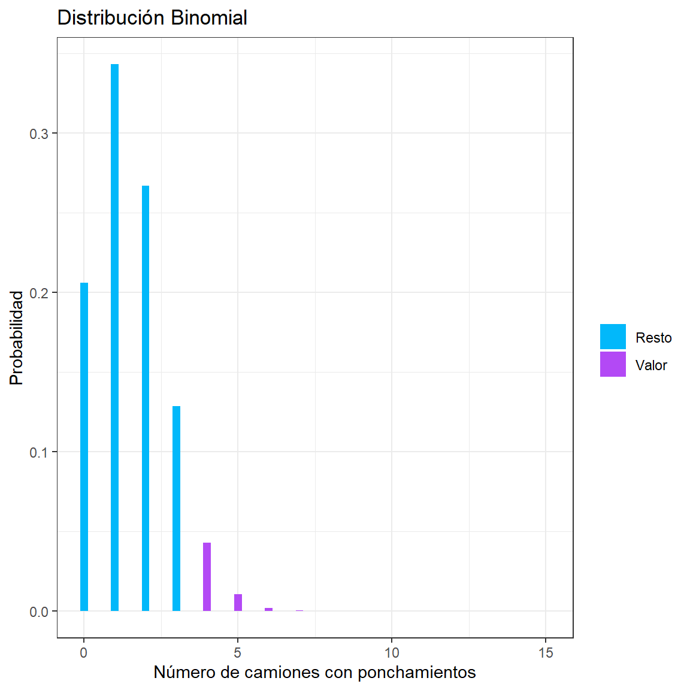
2.13 .Ejercicio 4
Una compañía de seguros considera que alrededor del 25% de los carros se accidentan cada año. ¿Cuál es la probabilidad de que por lo menos 3 de una muestra de 7 vehículos asegurados, se haya accidentado?
ggplot(df_3, aes(x = x, y = y, fill =factor(ifelse(x >=3& x <=7, "Valor", "Resto")))) +geom_bar(stat ="identity", width =0.25) +xlab("Número de camiones con ponchamientos") +ylab("Probabilidad") +ggtitle("Distribución Binomial") +scale_fill_manual(name ="", values =c("Valor"="#b349f5", "Resto"="#02b8fa")) +theme_bw()
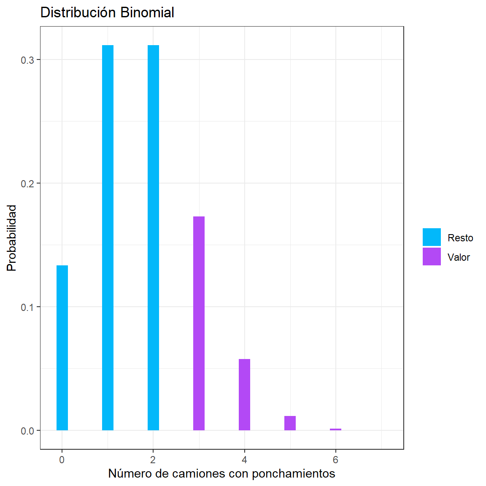
2.16 .Ejercicio 5
Los registros muestran que 30% de los pacientes admitidos en una clínica, no pagan sus facturas y eventualmente se condona la deuda. Suponga que llegan 4 nuevos pacientes a la clínica, a) cual es la probabilidad de que se tenga que perdonar la deuda de uno de los cuatro. b) los cuatro pacientes paguen sus facturas.
ggplot(df_3, aes(x = x, y = y, fill =factor(ifelse(x <4, "Valor", "Resto")))) +geom_bar(stat ="identity", width =0.25) +xlab("Número de camiones con ponchamientos") +ylab("Probabilidad") +ggtitle("Distribución Binomial") +scale_fill_manual(name ="", values =c("Valor"="#b349f5", "Resto"="#02b8fa")) +theme_bw()
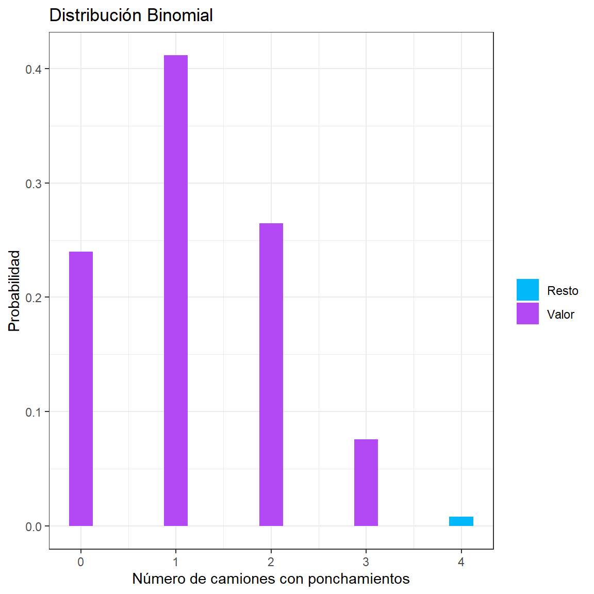
3 .Distribucion De Poisson
La distribución de Poisson es una distribución de probabilidad discreta que se utiliza para modelar el número de veces que ocurre un evento en un intervalo fijo de tiempo, espacio, longitud o área, cuando los eventos ocurren de manera aleatoria e independiente.
Se aplica cuando queremos responder preguntas como:
¿Cuántas llamadas llegan a un call center en una hora?
¿Cuántos accidentes ocurren en una avenida por día?
¿Cuántos errores tiene una página escrita?
¿Cuántos clientes llegan a una tienda en 10 minutos?
La variable aleatoria se representa generalmente por X, donde:
X \sim Poisson(\lambda)
y \lambda representa el número promedio de ocurrencias del evento.
Características principales de la distribución de Poisson
1. Es una distribución discreta
La variable solo puede tomar valores enteros no negativos:
0,1,2,3,\dots
Por ejemplo:
0 llamadas
1 accidente
2 clientes
5 errores
2. Modela eventos aleatorios
Los eventos ocurren de manera impredecible, pero con una tasa promedio constante.
Ejemplo:
promedio de 3 llamadas por minuto
promedio de 2 accidentes por semana
3. Los eventos son independientes
La ocurrencia de un evento no afecta la probabilidad de otro.
Ejemplo: Si entra un cliente a una tienda, eso no cambia la probabilidad de que llegue otro cliente.
4. La tasa promedio es constante
El valor \lambda permanece estable durante el intervalo estudiado.
Ejemplo:
promedio de 4 correos por hora.
Si cambia mucho en el tiempo, Poisson deja de ser adecuado.
5. La media y la varianza son iguales
Una propiedad fundamental:
\mu = \lambda
y
\sigma^2 = \lambda
Es decir:
Media = Varianza = \lambda
Ejemplo: Si \lambda = 5:
media = 5
varianza = 5
6. Se usa para eventos raros
Es muy útil cuando los eventos tienen baja probabilidad, pero hay muchas oportunidades de ocurrencia.
Ejemplos:
defectos en producción
accidentes
fallas de máquinas
enfermedades raras
Función de probabilidad
La fórmula de Poisson es:
P(X=x)=\frac{e^{-\lambda}\lambda^x}{x!}
Donde:
P(X=x): probabilidad de observar exactamente x eventos
e: constante de Euler (\approx 2.71828)
\lambda: media de ocurrencias
x: número de eventos
x!: factorial de x
Condiciones para usar Poisson
La distribución de Poisson se utiliza cuando:
Los eventos son independientes.
Los eventos ocurren aleatoriamente.
Se analiza un intervalo fijo.
La tasa promedio es constante.
Dos eventos no ocurren exactamente al mismo tiempo.
Ejemplo práctico
Suponga que una clínica recibe en promedio 4 emergencias por hora.
Entonces:
\lambda = 4
La distribución de Poisson puede calcular:
probabilidad de recibir exactamente 2 emergencias,
más de 5,
ninguna emergencia, etc.
3.1 .Ejercicio 6
El conmutador de un hospital recibe en promedio 20 llamadas cada dos minutos. Cuál es la probabilidad de que lleguen como máximo dos llamadas en un periodo de 15 segundos.
rango <-0:5prob_poisson <-round(dpois(rango, lambda = promedio_accidentes), 4)df_3 <-data.frame(numero_accidentes = rango, probabilidad = prob_poisson)ggplot(df_3, aes(x = numero_accidentes, y = probabilidad, fill =factor(ifelse(numero_accidentes ==5, "Valor", "Resto")))) +geom_bar(stat ="identity", width =0.25) +xlab("Número de Accidentes") +ylab("Cuantía") +ggtitle("Distribución de Poisson") +scale_fill_manual(name ="", values =c("#b349f5", "#02b8fa"))
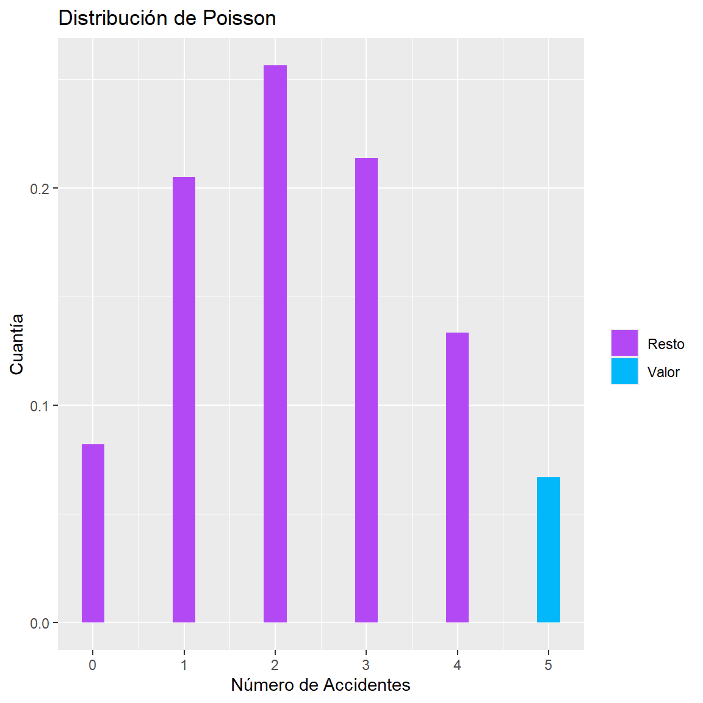
3.4 .Ejercicio 7
Los clientes llegan a una exhibición a razón de 6,8 clientes / hora Calcule la probabilidad de que a) en la primera media hora por lo menos lleguen dos clientes; b) en cualquier hora dada llegue más de uno.
# Promedio de clientes en media horalambda <-3.4# Queremos la probabilidad de exactamente 2 clientesk <-2# Probabilidad Poissonprobabilidad <-round(dpois(k, lambda), 4)# Resultadoprint(probabilidad)
[1] 0.1929
La probabilidad es de 19.29
Ver código
# Promedio de clientes en media horalambda <-3.4# Valores de Xrango <-0:6# Probabilidades Poissonprob_poisson <-round(dpois(rango, lambda = lambda), 4)# Data framedf_3 <-data.frame(numero_clientes = rango,probabilidad = prob_poisson)# Gráficaggplot(df_3,aes(x = numero_clientes,y = probabilidad,fill =factor(ifelse(numero_clientes ==2,"Valor","Resto")))) +geom_bar(stat ="identity", width =0.25) +xlab("Número de clientes") +ylab("Probabilidad") +ggtitle("Distribución de Poisson") +scale_fill_manual(name ="",values =c("#b349f5", "#02b8fa"))
# Promedio de clientes por horalambda <-6.8# Queremos calcular P(X <= 1)k <-2# Probabilidad acumuladaprobabilidad <-sum(dpois(0:(k-1), lambda))# Resultadoround(probabilidad, 4)
[1] 0.0087
La probabilidad es de 00.87%
Ver código
# Promedio de clientes por horalambda <-6.8# Valores de Xrango <-0:10# Probabilidades Poissonprob_poisson <-round(dpois(rango, lambda = lambda), 4)# Probabilidad acumulada hasta 1 clienteprob_acumulada_hasta_1 <-sum(prob_poisson[1:2])# Data framedf_4 <-data.frame(numero_clientes = rango,probabilidad = prob_poisson)# Gráficaggplot(df_4,aes(x = numero_clientes,y = probabilidad,fill =factor(ifelse(numero_clientes <=1,"valor","resto")))) +geom_bar(stat ="identity", width =0.25) +xlab("Número de clientes") +ylab("Probabilidad") +ggtitle("Distribución de Poisson") +scale_fill_manual(name ="",values =c("#b349f5", "#02b8fa")) +theme_bw()
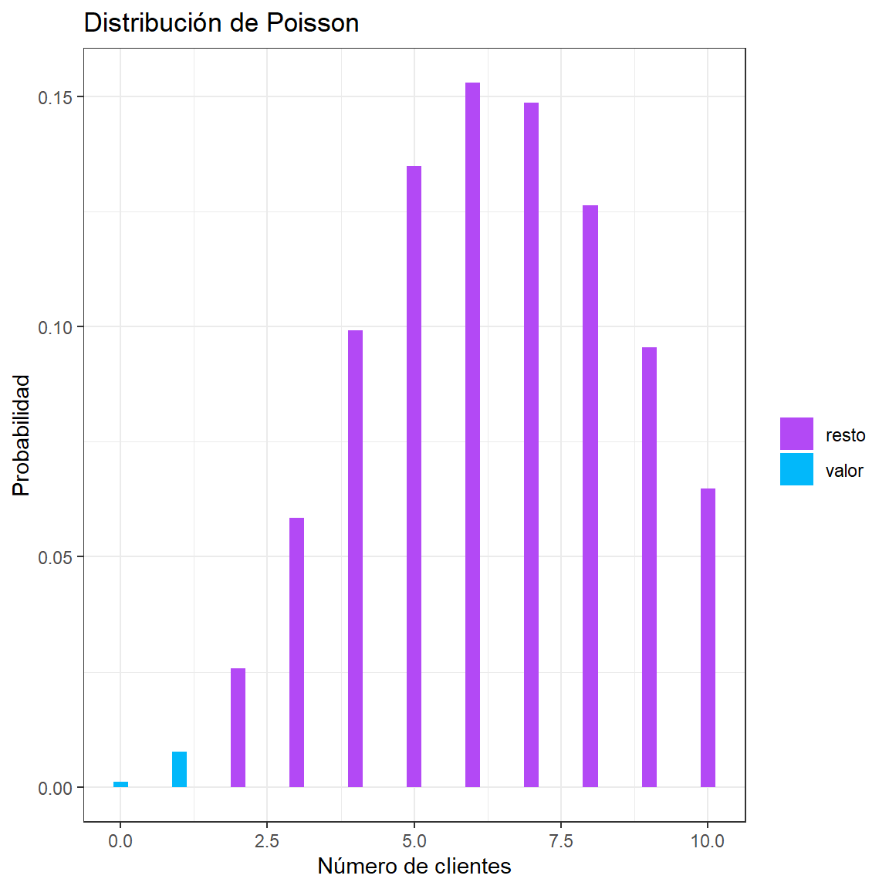
3.7 .Ejercicio 8
El número promedio de urgencias que llega a un hospital en una hora es de 12. Cuál es la probabilidad de que en un minuto lleguen por lo menos 2 urgencias. ¿Cuál es el número de urgencias esperado por minuto?
# Número esperado de urgencias por minutolambda <-0.2# Valor esperado en una distribución Poissonesperado <- lambda# Resultadoround(esperado, 4)
[1] 0.2
Es de 2/min
Ver código
# Promedio de urgencias por minutolambda <-0.2# Valores de Xrango <-0:5# Probabilidades Poissonprob_poisson <-round(dpois(rango, lambda = lambda), 4)# Probabilidad acumulada hasta 2 urgenciasprob_acumulada_hasta_2 <-sum(prob_poisson[1:3])# Data framedf_4 <-data.frame(numero_urgencias = rango,probabilidad = prob_poisson)# Gráficaggplot(df_4,aes(x = numero_urgencias,y = probabilidad,fill =factor(ifelse(numero_urgencias <3,"valor","resto")))) +geom_bar(stat ="identity", width =0.25) +xlab("Número de urgencias") +ylab("Probabilidad") +ggtitle("Distribución de Poisson") +scale_fill_manual(name ="",values =c("#b349f5", "#02b8fa")) +theme_bw()
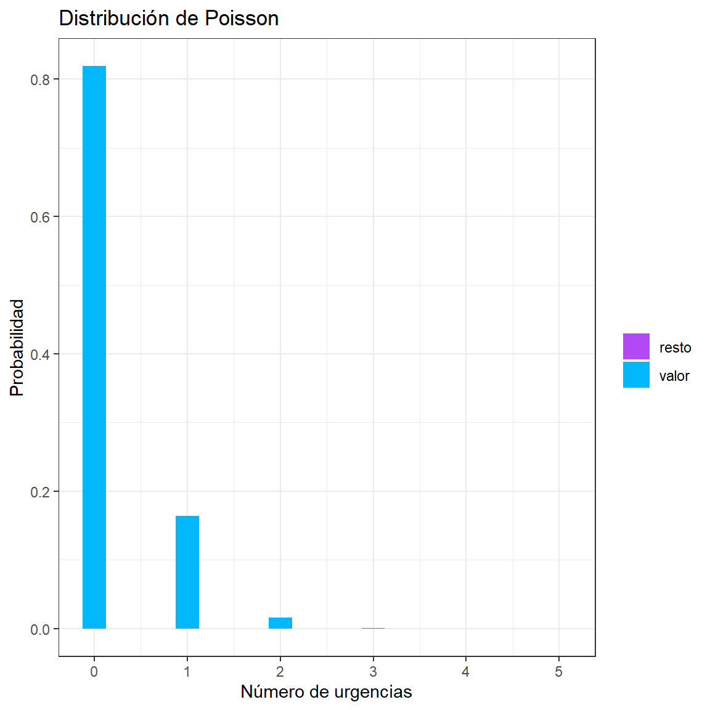
3.10 .Ejercicio 9
Las estadísticas indican que en una fábrica se presentan en promedio 10 accidentes por trimestre. Determine la probabilidad de que no haya más de 12 accidentes en el último trimestre.
# Promedio de accidentes por trimestrelambda <-10# Queremos calcular la probabilidad de exactamente 12 accidentesk <-12# Probabilidad Poissonprobabilidad <-round(dpois(k, lambda), 4)# Resultadoprint(probabilidad)
[1] 0.0948
La probabilidad es de 09.48%
Ver código
# Promedio de accidentes por trimestrelambda <-10# Valores de Xrango <-0:12# Probabilidades Poissonprob_poisson <-round(dpois(rango, lambda = lambda), 4)# Data framedf_3 <-data.frame(numero_accidentes = rango,probabilidad = prob_poisson)# Gráficaggplot(df_3,aes(x = numero_accidentes,y = probabilidad,fill =factor(ifelse(numero_accidentes ==12,"Valor","Resto")))) +geom_bar(stat ="identity", width =0.25) +xlab("Número de accidentes") +ylab("Probabilidad") +ggtitle("Distribución de Poisson") +scale_fill_manual(name ="",values =c("#b349f5", "#02b8fa"))
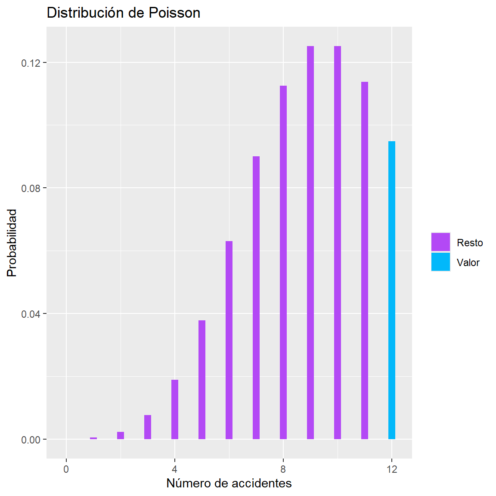
3.13 .Ejercicio 10
El número de personas que ingresan a la unidad de cuidados intensivos de un hospital en un día cualquiera, es de 5 personas diarias. ¿Cuál es la probabilidad de que el número de personas que ingresan a la unidad de cuidados intensivos en un día particular sea menor o igual a 2 personas?
¿Cuál es la probabilidad de que el número de personas que ingresan a la unidad de cuidados intensivos en un día particular sea menor o igual a 2 personas?
# Promedio de ingresos diarios a UCIlambda <-5# Queremos calcular la probabilidad de exactamente 2 personask <-2# Probabilidad Poissonprobabilidad <-round(dpois(k, lambda), 4)# Resultadoprint(probabilidad)
[1] 0.0842
La probabilidad es de 08.42%
Ver código
# Promedio de ingresos diarios a UCIlambda <-5# Valores de Xrango <-0:6# Probabilidades Poissonprob_poisson <-round(dpois(rango, lambda = lambda), 4)# Data framedf_3 <-data.frame(numero_personas = rango,probabilidad = prob_poisson)# Gráficaggplot(df_3,aes(x = numero_personas,y = probabilidad,fill =factor(ifelse(numero_personas ==2,"Valor","Resto")))) +geom_bar(stat ="identity", width =0.25) +xlab("Número de personas") +ylab("Probabilidad") +ggtitle("Distribución de Poisson") +scale_fill_manual(name ="",values =c("#b349f5", "#02b8fa"))
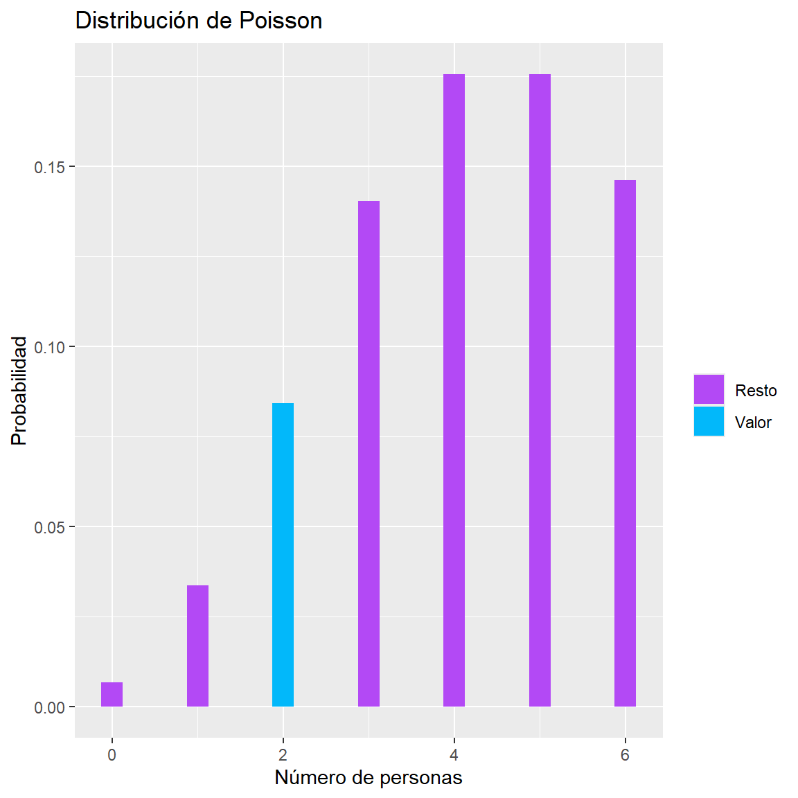
3.16 .Ejercicio 11
En promedio una casa de cada 2000 en cierta zona de Barranquilla se incendia durante el año, si hay 6000 casas en dicha zona ¿Cuál es la probabilidad de que más de 3 casas se incendien durante el año?
Un jefe de almacén sabe que 6 de las 25 bicicletas que tiene para la venta presentan fallas en los frenos y necesitan ajuste. Si el vendedor que no tenía conocimiento de lo anterior vendió en el día 4 bicicletas, ¿cuál es la probabilidad de que vendiera dos de las que requerían ajuste.
# Datos del problemaN <-25# Total de bicicletasK <-6# Bicicletas con fallasn <-4# Bicicletas vendidasx <-2# Queremos exactamente 2 con fallas# Probabilidad hipergeométricaprobabilidad <-round(dhyper(x,m = K,n = N - K,k = n), 4)# Resultadoprint(probabilidad)
[1] 0.2028
La probabilidad es de 20.20%
Ver código
# Datos del problemaN <-25# Total de bicicletasK <-6# Bicicletas con fallasn <-4# Bicicletas vendidas# Valores de Xrango <-0:4# Probabilidades hipergeométricasprob_hipergeometrica <-round(dhyper(rango,m = K,n = N - K,k = n), 4)# Data framedf_3 <-data.frame(bicicletas_con_fallas_vendidas = rango,probabilidad = prob_hipergeometrica)# Gráficaggplot(df_3,aes(x = bicicletas_con_fallas_vendidas,y = probabilidad,fill =factor(ifelse(bicicletas_con_fallas_vendidas ==2,"Valor","Resto")))) +geom_bar(stat ="identity", width =0.25) +xlab("Número de bicicletas con fallas vendidas") +ylab("Probabilidad") +ggtitle("Distribución Hipergeométrica") +scale_fill_manual(name ="",values =c("#fcb268", "#e284f5"))
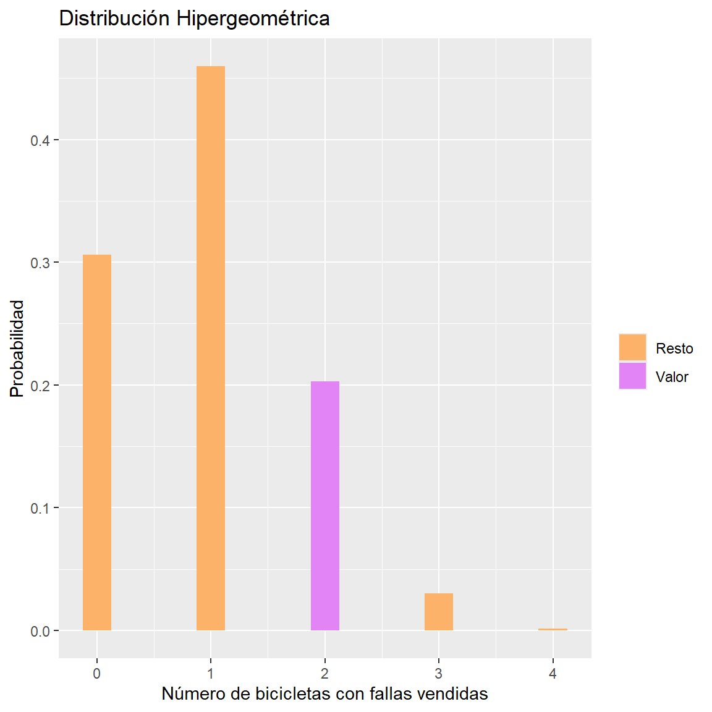
4.4 .Ejercicio 13
De un grupo de 20 ingenieros con doctorado, se seleccionan 10 para un alto cargo de una compañía. ¿Cuál es la probabilidad de que los 10 seleccionados incluya a los 5 ingenieros que tienen las mejores calificaciones del grupo de 20?
# Datos del problemaN <-20# Total de ingenierosK <-5# Ingenieros con mejores calificacionesn <-10# Ingenieros seleccionadosx <-5# Queremos que estén incluidos los 5 mejores# Probabilidad hipergeométricaprobabilidad <-round(dhyper(x,m = K,n = N - K,k = n), 4)# Resultadoprint(probabilidad)
[1] 0.0163
La probabilidad es de 16.30%
Ver código
# Datos del problemaN <-20# Total de ingenierosK <-5# Ingenieros con mejores calificacionesn <-10# Ingenieros seleccionados# Valores de Xrango <-0:5# Probabilidades hipergeométricasprob_hipergeometrica <-round(dhyper(rango,m = K,n = N - K,k = n), 4)# Data framedf_3 <-data.frame(ingenieros_mejores_seleccionados = rango,probabilidad = prob_hipergeometrica)# Gráficaggplot(df_3,aes(x = ingenieros_mejores_seleccionados,y = probabilidad,fill =factor(ifelse(ingenieros_mejores_seleccionados ==5,"Valor","Resto")))) +geom_bar(stat ="identity", width =0.25) +xlab("Número de ingenieros con mejores calificaciones") +ylab("Probabilidad") +ggtitle("Distribución Hipergeométrica") +scale_fill_manual(name ="",values =c("#e284f5", "#fcb268"))
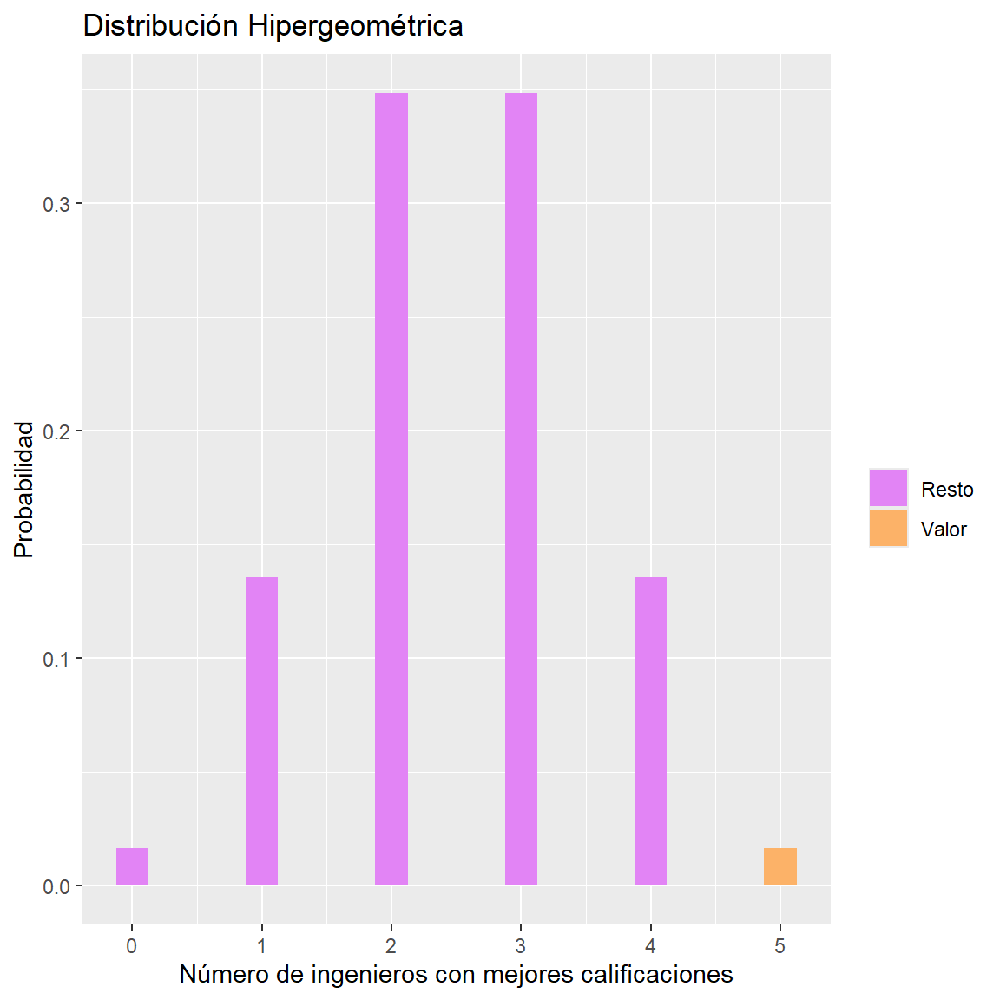
4.7 .Ejercicio 14
Un almacén contiene diez maquinas impresoras, cuatro de las cuales están defectuosas. Una compañía selecciona al azar cinco de las maquinas, pensando que todas están en condiciones de trabajar, ¿cuál es la probabilidad de que las cinco maquinas estén en buen estado?
# Datos del problemaN <-10# Total de máquinas impresorasK <-6# Máquinas en buen estadon <-5# Máquinas seleccionadasx <-5# Queremos que las 5 estén en buen estado# Probabilidad hipergeométricaprobabilidad <-round(dhyper(x,m = K,n = N - K,k = n), 4)# Resultadoprint(probabilidad)
[1] 0.0238
La probabilidad es de 02.38%
Ver código
# Datos del problemaN <-10# Total de máquinas impresorasK <-6# Máquinas en buen estadon <-5# Máquinas seleccionadas# Valores de Xrango <-0:5# Probabilidades hipergeométricasprob_hipergeometrica <-round(dhyper(rango,m = K,n = N - K,k = n), 4)# Data framedf_3 <-data.frame(maquinas_en_buen_estado = rango,probabilidad = prob_hipergeometrica)# Gráficaggplot(df_3,aes(x = maquinas_en_buen_estado,y = probabilidad,fill =factor(ifelse(maquinas_en_buen_estado ==5,"Valor","Resto")))) +geom_bar(stat ="identity", width =0.25) +xlab("Número de máquinas en buen estado") +ylab("Probabilidad") +ggtitle("Distribución Hipergeométrica") +scale_fill_manual(name ="",values =c("#fcb268", "#e284f5"))
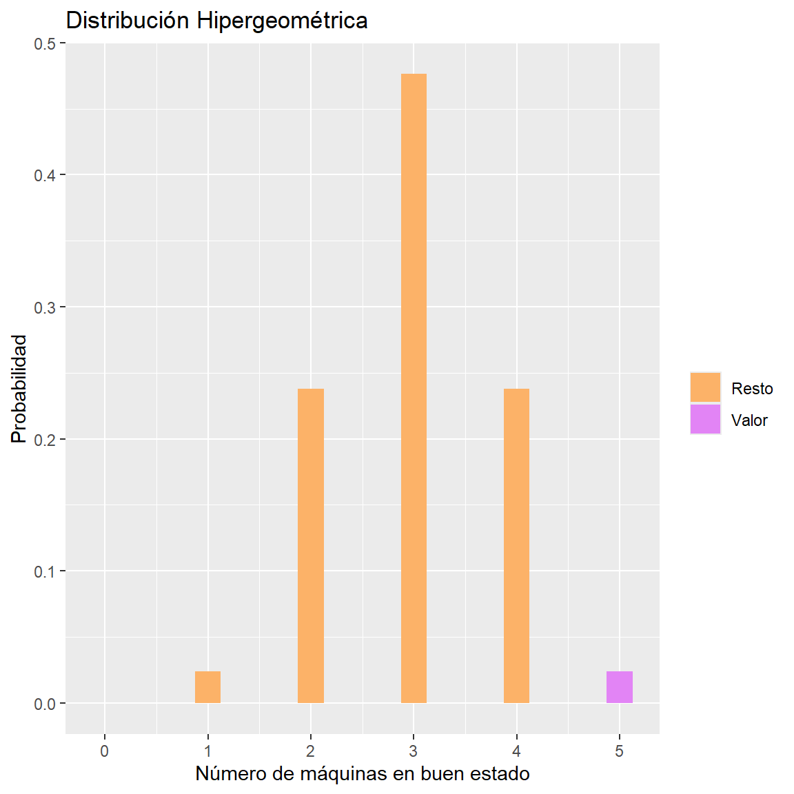
4.10 .Ejercicio 15
La probabilidad de que un estudiante de aviación pase la prueba escrita para obtener su licencia de piloto privado es de 0.7. encuentre la probabilidad de que una persona pase la prueba antes del cuarto intento.
4.11 .EXPLICACION Y ARGUMENTO
La distribución hipergeométrica no aplica en este ejercicio.
La hipergeométrica se usa cuando:
Hay una población finita.
Se selecciona sin reemplazo.
Existe un número fijo de éxitos y fracasos en la población.
Aquí:
Cada intento es independiente.
La probabilidad de aprobar sigue siendo (0.7) en cada intento.
No hay una población finita de exámenes “buenos” o “malos”.
Por eso el modelo correcto es la distribución geométrica.
La probabilidad de aprobar antes del cuarto intento es:
# Datos del problemap <-0.7# Probabilidad de aprobarx <-4# Antes del cuarto intento# Probabilidad geométricaprobabilidad <-round(1- (1- p)^3, 4)# Resultadoprint(probabilidad)
[1] 0.973
La probabilidad es de 97.3%
Ver código
# Datos del problemap <-0.7# Probabilidad de aprobar# Valores de X (intentos)rango <-1:6# Probabilidades geométricasprob_geometrica <-round(dgeom(rango -1, prob = p), 4)# Data framedf_3 <-data.frame(numero_intento = rango,probabilidad = prob_geometrica)# Gráficaggplot(df_3,aes(x = numero_intento,y = probabilidad,fill =factor(ifelse(numero_intento ==3,"Valor","Resto")))) +geom_bar(stat ="identity", width =0.25) +xlab("Número de intento") +ylab("Probabilidad") +ggtitle("Distribución Geométrica") +scale_fill_manual(name ="",values =c("#72fc84", "#eff547"))